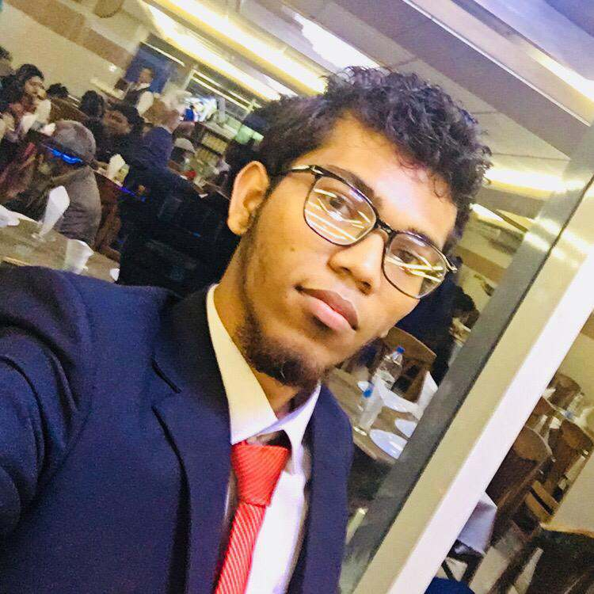

Mainul Karim |
|---|
|  |
Personal details |
| Born : January 16, 1997 |
| Parents : Zahorul Karim (Father) Zosna Karim (Mother) |
| Relatives : Chowdhury Family |
| Residence : Brahmanbaria, (Chittagong) |
| Education : Annda Govt High School
Brahmanbaria Govt College United International University |
| political Party : None |
| Awards : None |
My name is Mainul Karim. I am a student and I like to study. My favorite subjects are CSE and IT. My goal is to study these
subjects and to become a respected professional in one of the fields.
I can say that I am a responsible and a hard-working student. Moreover, being a sociable person,
I have many friends since I like to communicate with people and get to know new interesting
individuals. I enjoy my time at University: it is really nice to study, the students are very
friendly and ready to help. The atmosphere cannot but make me want to go there every time.
I like to receive and deal with challenging tasks. I am a very enthusiastic student and
I think this is a strong point of mine.
My friends say that I am a very serious and an interesting boy with not a good sense of humor.
As soon as I meet new people who are happy to meet me, I feel extremely comfortable with them.
I believe that friendship is one of the most important values in human life. We exchange new
ideas, find many interesting things about each other and experience new things. I appreciate
friendship and people who surround me.
Meeting new people who support all my efforts to grow and develop my skills not only in the subjects
but also in my hobbies gives me a lot of energy.
The goal I’m currently striving for is to make this world a better place to live in by starting
the changes with myself. Sure, I’ve had bad experiences in my life too, but this is exactly what
made me the way I am now: grateful, full of love, with a desire to study well because it will
help me become a successful person in future and have a high quality of life. I believe that it
is manifesting day by day and I feel even more responsibility for what I do and where I go.
With all I already have, I know that I’m on the right path and I will do my best to inspire
thers to live the way they feel like living as well.